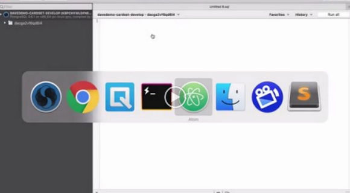

Configuring a Delivery Pipeline
2017-01-18
tl;dr
Heroku Pipelines allow you to setup a continuous delivery pipeline with multiple stages.

Transcript
- git-flow refresher
- Create develop from master
- Change default branch to develop
- Protect master will all checkboxes except for merge review for admins
- Heroku pipeline for development stage
- Navigate to pipeline
- Create app named davedemo-cardset-develop
- Add to pipeline
- Move to development stage
- Click into app overview
- Add PostgreSQL and Papertrail
- Connect to database and bootstrap database then add another card for testing
- Click to deployment page
- Enable automatic deployment for develop
- Manually deploy from develop
- Click to view the app to be sure it’s running.
- Try /api/generic/card and see data
- Heroku review apps are cool but we will do another time b/c credentials and cost
- Create feature branch
- Add
.github/PULL_REQUEST_TEMPLATE.md to feature then PR to develop
- Rebase, merge, delete
- PR from develop to master with squash v0.0.1 and describe semver and changelog message
- Verify deployment in browser and in Heroku overview
- Heroku pipeline for staging stag
- Repeat steps like setting up development stage
- Enable automatic deployments from master
- Go into production app and remove automatic deployment
Next post in this series
Organizing Your Project Folder